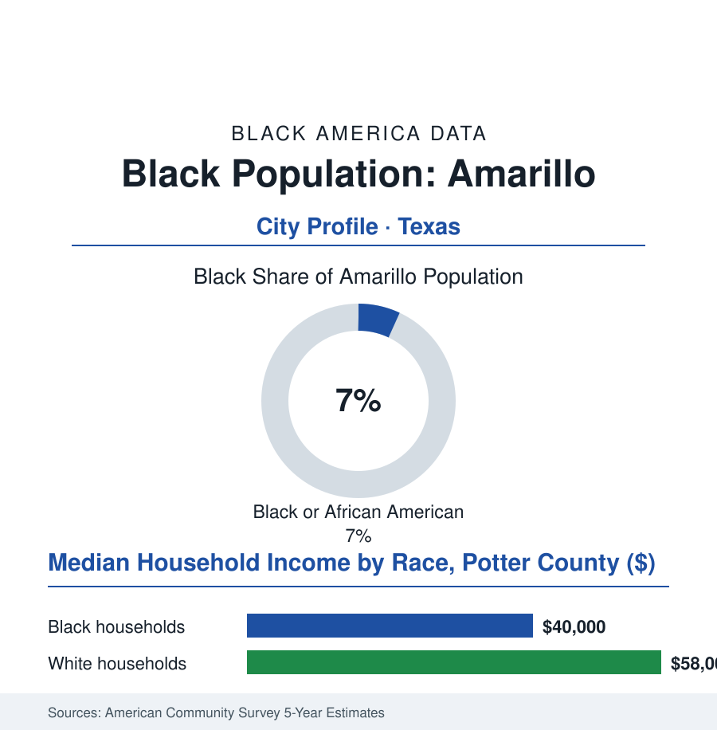

Black Cities
Black Amarillo: 14,000 People on the High Plains
Amarillo's Black community is seven percent of a Panhandle railroad-and-beef city — a small, rooted population whose institutions have carried its weight for a century on the Llano Estacado. The numbers.

Amarillo's Black community numbers roughly 14,000 people — about 7% of the city's 200,000 residents — the smallest share in this book's Texas file, in the Panhandle capital of cattle and railroads and helium, where a compact community on the city's north side has maintained the full institutional kit of Black civic life at a scale the bigger cities would call intimate. This article reads Amarillo's numbers. The record still plainly holds.
The Railroad's North Side
The founding follows the rails: Amarillo exists because the railroads crossed there, and the Black porters, cooks, and section hands of the lines — with the cowboys of the ranch country's Black minority in the oral histories, the legendary figures of the cattle era's Black West (the trail cooks, the mustangers, the famous Bones Hooks of the Panhandle's own record) — seeded a community that the beef era then staffed: the packinghouses of the stockyard district employing the industrial generations, the north side's grid filling with the churches, the school, the business strip of the standard Texas pattern at Panhandle scale. The segregated school's alumni association keeps the archive as faithfully as any in this file (the reunions drawing the diaspora back to the Plains from the metros), the civil-rights chapters running the small-city course — the lunch counters, the slow school integration of the Texas record, the ward system's late arrival — and the community's civic leadership punching, in the mayors-and-councils data of the recent decades, at the weight its cohesion rather than its percentage would predict. The demographic fact that defines the modern file is the community's position in a diversifying city: the meatpacking industry's rebirth brought the Plains' great immigrant wave — the refugee and immigrant neighborhoods of the modern Amarillo making it, per capita, one of the most international small cities in America — the Black community's seven percent now one community among many in a city its founders' grandchildren scarcely recognize, its institutions (the churches, the Juneteenth calendar the city now officially keeps) the senior partners of the new diversity.
The Small Community's Ledger
The survey rows give the balance its shape: the Black household median in the low forty-thousands against the county's high fifty-thousands — the packinghouse and service wages of the modern economy beneath the energy-and-beef management tier — the north side's housing stock aging in the pattern of every historic Black district in this atlas, its values, in the recent data, rising with the city's growth into the gentrification file's gentlest Texas chapter (the appreciation arriving to blocks where ownership survived, the displacement pressure measured in the property-tax notices). The pipelines run through the community college (Amarillo College's workforce machine feeding the hospitals and the plants) and the university branch up the road in Canyon, the medical district of the plains drawing the region's patients and employing the community across its rows. The forward data are the High Plains' own: the wind energy's service economy spreading across the caprock, the beef industry's automation, the water file's great shadow — the Ogallala aquifer's decline running beneath the whole region's agriculture, the cities' century-horizon problem, in which the north side's wells are as deep as anyone's and its voice in the water politics as necessary. The file's closing note is about scale itself: at seven percent, every institution in this community is carried by named individuals whose grandparents are remembered — the pastor, the funeral director, the retired teacher who runs the alumni association — a civic density the percentage conceals and the attendance figures at any north-side homecoming reveal. Amarillo's Black community is this atlas's proof that the kit — church, school loyalty, business strip, burial society, Juneteenth — reproduces whole at almost any scale, given a century and a railroad.
Reading Amarillo's Numbers
Fourteen thousand people, seven percent, one set of plains: Amarillo is the cities file's small-community chapter — the full civilization at miniature scale, load-bearing as ever. The census counts the share. The homecoming crowd — filling the old school's gym on the north side — counts the institution, and finds the percentage irrelevant. The Plains keep what the Plains are given; this community gave itself.
More in Black Cities
Black Atlanta: Population, Distribution, and Growth of a Black Metropolis
Metro Atlanta holds more than two million Black residents — roughly one in three, second only to New York. The suburban distribution, migration history, and composition of Black Atlanta in the census data.
Black New York: The Largest Black Population in America
The New York metropolitan area holds about 3.4 million Black residents — more than any metro in the nation — and the city itself about two million. The census profile.
Black Washington: The District and the Metro
The Washington metro holds about 1.6 million Black residents, and the District itself — long a majority-Black city — now records a Black share near 41 percent. The census profile.
Source: U.S. Census Bureau, 2020 Census and American Community Survey 5-year estimates; City of Amarillo and Potter County records; Amarillo College data.